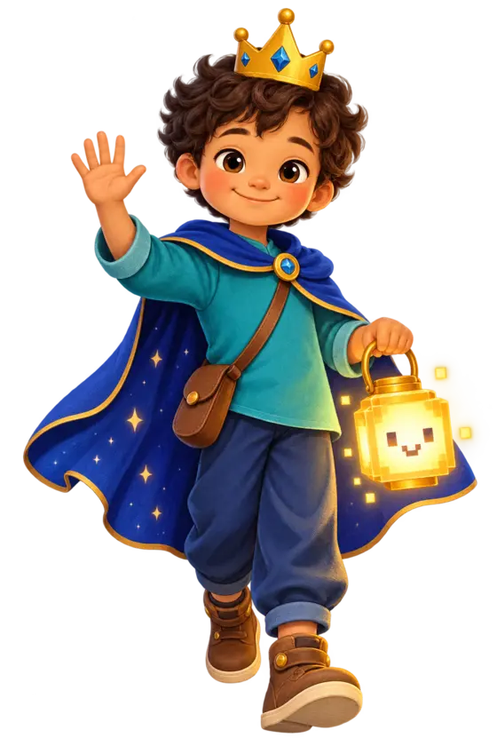

Buscador
Encontra páginas. Pode destacar anúncios ou resultados ruins.

Olá! Vamos entrar na internet juntos?
Um caminho curto para pesquisar, conversar, verificar informações e evitar armadilhas — sem vergonha e sem pressa.
Você não precisa saber tudo. Precisa saber quando parar e verificar.
Cada parada leva de três a cinco minutos. Seu progresso fica somente neste aparelho.
Leia a mensagem fictícia e escolha o que faria. Errar aqui também ensina.
Encontra páginas. Pode destacar anúncios ou resultados ruins.
Explica e cria. Pode responder com confiança mesmo quando está errada.
Confirma informações institucionais, mas às vezes usa linguagem difícil.
Avalia seu caso concreto quando possui a qualificação necessária.
BB é uma iniciativa educacional gratuita, experimental e aberta. O conteúdo ensina um método de verificação; não funciona como detector automático da verdade.
As orientações foram organizadas a partir de materiais públicos de alfabetização midiática e segurança digital. Antes de decisões sobre saúde, justiça ou dinheiro, consulte fontes oficiais e profissionais qualificados.
Não pedimos cadastro nem enviamos suas respostas a um servidor. Preferências e progresso permanecem no seu navegador. O site oferece navegação por teclado, foco visível, alto contraste, texto ampliado e redução de movimento.
Idealização e direção: Sidiney Rodrigues.
Inteligência artificial utilizada como apoio à pesquisa, redação, ilustração e desenvolvimento, sob direção e responsabilidade humanas.
Conteúdo: CC BY 4.0 · Código: MIT.